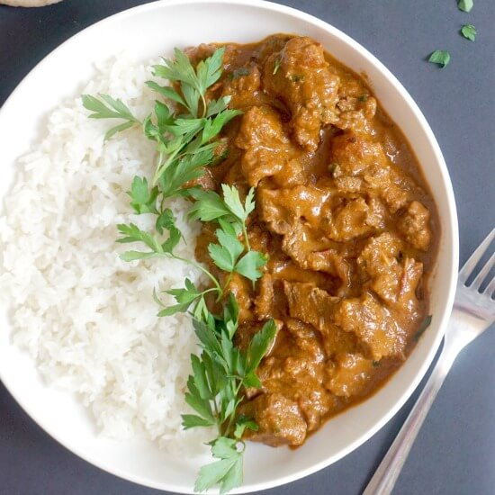

Beef Curry

Description
Beef curry is one of the most standard dishes
in Indian cuisine. Today we will be going over
how to make a very tasty beef curry dish much
faster than usual recipes.
Ingredients
- 500 grams beef
- 1 tbsp masala or any curry powder
- 1 large onion
- 1 tbsp tumeric
- 1 tbsp garlic paste or garlic grated
- 1 tbsp ginger paste or ginger grated
- 1 tsp salt (to taste)
- 15 curry leaves
- 150ml boiling water